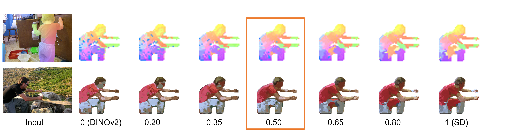

Abstract
Text-to-image diffusion models have made significant advances in generating and editing high-quality images.
As a result, numerous approaches have explored the ability of diffusion model features to understand and process single images for downstream tasks, e.g., classification, semantic segmentation, and stylization.
However, significantly less is known about what these features reveal across multiple, different images and objects.
In this work, we exploit Stable Diffusion (SD) features for semantic and dense correspondence and discover that with simple post-processing, SD features can perform quantitatively similar to SOTA representations.
Interestingly, the qualitative analysis reveals that SD features have very different properties compared to existing representation learning features, such as the recently released DINOv2: while DINOv2 provides sparse but accurate matches, SD features provide high-quality spatial information but sometimes inaccurate semantic matches.
We demonstrate that a simple fusion of these two features works surprisingly well, and a zero-shot evaluation using nearest neighbors on these fused features provides a significant performance gain over state-of-the-art methods on benchmark datasets, e.g., SPair-71k, PF-Pascal, and TSS.
We also show that these correspondences can enable interesting applications such as instance swapping in two images.
SD's Shortcomings? DINOv2 to the Rescue!
An intriguing question arises - could SD features offer valuable and complementary semantic correspondences compared to widely explored discriminative features, such as those from the newly released DINOv2 model?

Analysis of different features for correspondence.
We present visualization of PCA for the inputs from DAVIS (left) and dense correspondence for SPair-71k (right).
The figures show the performance of SD and DINO features under different inputs: identical instance (top left), pure object masks (bottom left), challenging inputs requiring semantic understanding (right top) and spatial information (right bottom).
Our qualitative analysis reveals that SD features have a strong sense of spatial layout and generate smooth correspondences, but its pixel level matching between two objects can often be inaccurate.
While DINOv2 generates sparse but accurate matches, which surprisingly, form a natural complement to the higher spatial information from SD features.

Visualization of the dense correspondence across varying fusion weights.
We demonstrate that by simply normalizing both features and then concantenating the two, the fused representation can utilize the strengths of both feature types (the numbers in the figure denote the fusion weight, with a balance between the two types of features achieved at a weight of 0.5).
Results
Results for dense correspondence.

Instance Swapping
Results for instance swapping.

Acknowledgements:
We borrow this template from Dreambooth.